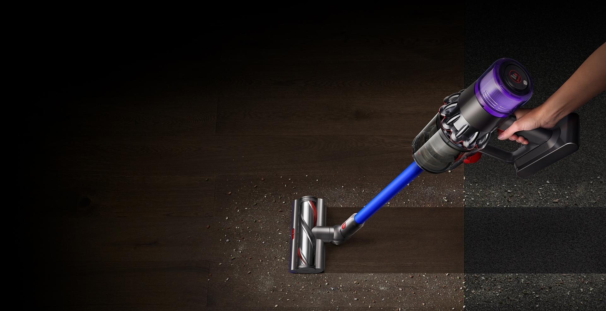

Benvenuti nel mondo innovativo degli aspirapolvere Dyson: dove la tecnologia all'avanguardia incontra la funzionalità eccezionale. Dyson Ltd, una rinomata azienda inglese, ha stabilmente impresso il proprio marchio nel settore degli elettrodomestici, offrendo una vasta gamma di prodotti destinati a rivoluzionare la pulizia domestica.